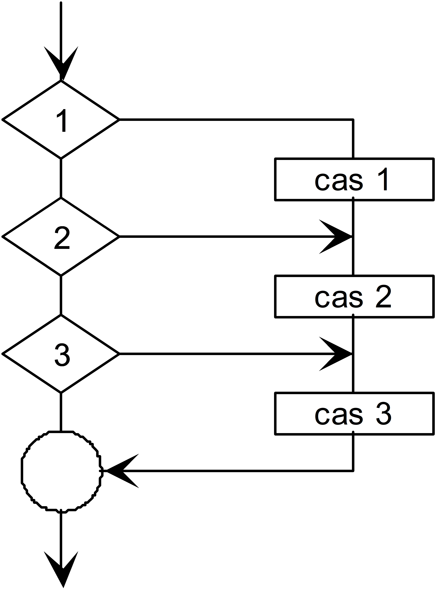
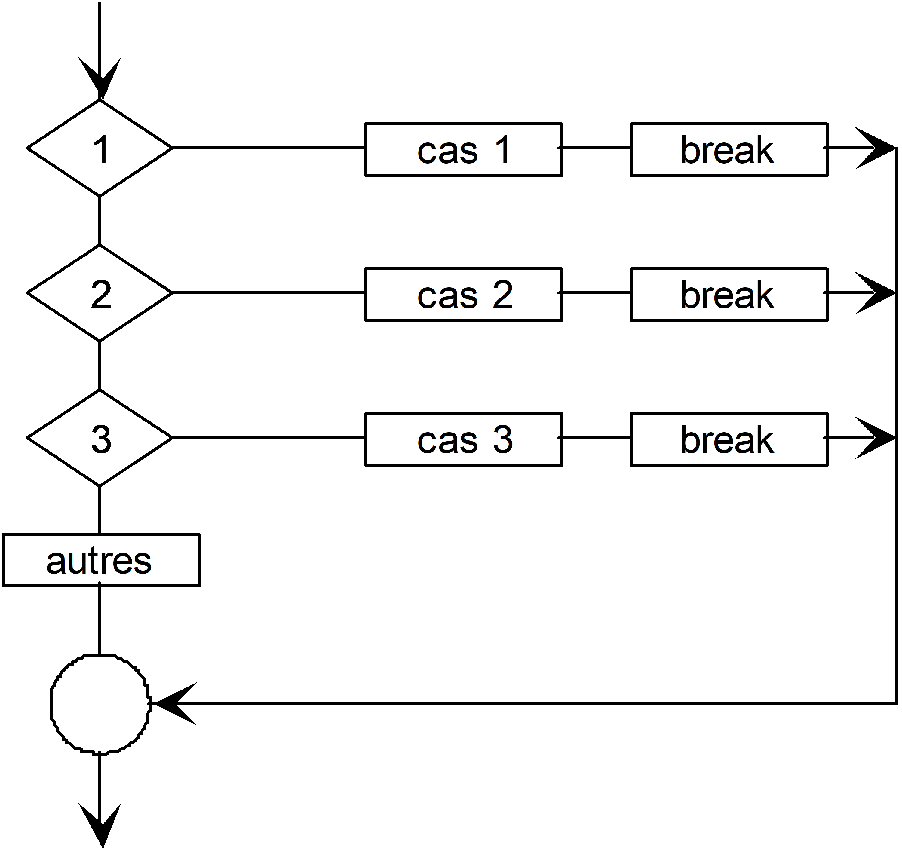

1242.1 Langage C - 2026-2027
1. Branchement conditionnel :
2. Branchement conditionnel :
3. Branchement multiple :
4. Boucle
5. Boucle
6. Boucle
7. Branchements inconditionnels :
if (<Condition>)
<Instruction>;
ou
if (<Condition>)
{
<instruction>;
…
}
if (<condition>); ❌
printf(...);
if (<Condition>)
<Instruction>;
else
<Instruction>;
ou
if (<Condition>)
{
<instruction>;
…
}
else
{
<instruction>;
…
}
if (solde >= retrait)
argent = retrait;
else
argent = 0;
if (mean >= 5.3) { // 5.3 <= mean
evalECTS = 'A';
}
else {
if (mean >= 4.8) { // 4.8 <= mean < 5.3
evalECTS = 'B';
}
else {
if (mean >= 4.4) { // 4.4 <= mean < 4.8
evalECTS = 'C';
}
...
}
}
Toujours mettre les
if (mean >= 5.3) // 5.3 <= mean <= 6
evalECTS = 'A';
else if (mean >= 4.8) // 4.8 <= mean < 5.3
evalECTS = 'B';
else if (mean >= 4.4) // 4.4 <= mean < 4.8
evalECTS = 'C';
...
else
...;
L'absence des
La condition doit être entre parenthèses
if (x == y) {
..
} else if (x > y){
...
} else {
....
}
if (x == y)
{
...
}
else if (x > y)
{
...
}
else
{
...
}
Aussi appelé opérateur conditionnel.
Il calcule une valeur selon le résultat d’une condition logique.
int a = 3, b = 9, max, min;
max = ((a > b) ? a : b);
min = ((a > b) ? b : a);
printf("Plus grande variable : %c", (a > b) ? 'a' : 'b');
int b = 28213;
const bool divisible_by_7 = (b % 7 == 0);
if(divisible_by_7) printf("'b' a une division entière par 7");
switch (value)
{
case 1 : printf("Cas 1\n");
value = 10;
case 2 : printf("Cas 2\n");
value = 20;
case 3 : printf("Cas 3\n");
value = 30;
}
| Au début si | 1 | 2 | 3 | autre |
|---|---|---|---|---|
| Affichage | Cas 1 Cas 2 Cas 3 | Cas 2 Cas 3 | Cas 3 | |
| À la fin | 30 | 30 | 30 | value |
switch (<Paramètre>)
{
case <valeur_A> : <Instruction_A1>;
<Instruction_A2>;
...
case <valeur_B> : <Instruction_B1>;
<Instruction_B2>;
...
[default: <instruction(s)>]
}

Programmation non structurée
(pas représentable par un structogramme)
switch (value)
{
case 1 : printf("Cas 1\n");
value = 10;
break;
case 2 : printf("Cas 2\n");
value = 20;
break;
case 3 : printf("Cas 3\n");
value = 30;
break;
default: printf("Autres\n");
}
| Au début si | 1 | 2 | 3 | autre |
|---|---|---|---|---|
| Affichage | Cas 1 | Cas 2 | Cas 3 | Autres |
| À la fin | 10 | 20 | 30 |

↪ Un
L'inverse n'est souvent pas possible
Beaucoup de programmes réalisent des actions répétitives. Par exemple, pour créer un agenda, on donne chaque fois le nom, le prénom, le numéro de téléphone.
while (<Condition>)
<Instruction>;
while (<Condition >)
{
<Instruction>;
…
}
Tant que <condition> vraie
<Instruction>;
ou
{ <Bloc> }
Calcul du modulo :
Solution : tant que n≥m , soustraire m à n.
int main(void)
{
int n = 10, m = 3;
while (n >= m)
{
n = n - m;
}
printf("modulo = %d\n", n);
return 0;
}
i=0;
while(i++ < 3)
printf(" %d ",i);
printf(" et %d ",i);
i=0;
while(i < 3)
printf(" %d ",i++);
printf(" et %d ",i);
i=0;
while(++i < 3)
printf(" %d ",i);
printf(" et %d ",i);
i=0;
while(i < 3)
printf(" %d ",++i);
printf(" et %d ",i);
i=0;
while(i++ < 3)
printf(" %d ",i);
printf(" et %d ",i);
1 2 3 et 4
i=0;
while(i < 3)
printf(" %d ",i++);
printf(" et %d ",i);
0 1 2 et 3
i=0;
while(++i < 3)
printf(" %d ",i);
printf(" et %d ",i);
1 2 et 3
i=0;
while(i < 3)
printf(" %d ",++i);
printf(" et %d ",i);
1 2 3 et 3
Avec
Le corps de la boucle
Les instructions dans le corps de la boucle doivent modifier la condition afin de la rendre fausse à un moment donné. C’est la condition de sortie de la boucle.
Sinon, on exécute une
do
<Instruction>;
while (<Condition>);
do
{
<Bloc>
}
while (<Condition>);
<Instruction>;
ou
{ <Bloc> }
À répéter tant que
<condition> est vraie
Lire un nombre au clavier compris entre 0 et 10
int main(void)
{
int nb, status;
do
{
printf("Entrez un nombre(0-10):");
status = scanf("%d", &nb);
if (status == EOF)
{
return 1;
}
int c;
while ((c = getchar()) != '\n' && c != EOF)
{
}
}while (status != 1 || nb<0 || nb>10);
return 0;
}
La ou les instructions du corps de la boucle sont exécutées tant que la condition est vraie.
Le corps de la boucle
Les instructions dans le corps de la boucle doivent modifier la condition pour la rendre fausse à un moment donné
do
{
...
}while(condition);
for (<Init>; <Condition>; <Incrémentation>)
<Instruction>;
for (<Init>; <Condition>; <Incrémentation >)
{
<Bloc>
}
<Instruction>;
ou
{ <Bloc> }
for (initialisation; condition; incrément)
{
liste d'instructions;
}
initialise la variable d'indice une seule fois, à l'entrée dans la boucle
doit être vraie pour que les instructions de la boucle s'exécutent
modifie la valeur de l'indice
Permet de répéter une ou plusieurs instructions, un nombre de fois déterminé.
Utilise un indice (un entier) pour compter le nombre de fois que la boucle est effectuée.
Sa valeur doit être
et
Calculer an = a*a* ... *a pour n>=0 en partant de a0 qui vaut 1
int main(void)
{
int i, n = 3;
double a = 2.0;
double power = 1.0;
for( i=0; i<n; i++ )
{
power = power * a;
}
printf("%lf\n", power);
return 0;
}
1 2,5,8 4,7
for (n = 0; n < 2; ++n){
3 6
printf("Iteration:%d\n", n);
}
9 printf("Fin:%d", n);
Iteration:0
Iteration:1
Fin:2
n=0
n=1
n=2
(1) l'expression d'<Initialisation> est exécutée (1).
(2) <Condition> est testée (2).
(3) Si elle est remplie, alors, l'<Instruction> est exécutée (3),
(4) puis l'<Incrémentation> est effectuée (4)
(5) <Condition> est à nouveau testée (5).
(8) Si la <Condition> n'est pas remplie (8), la boucle for prend fin.
L'instruction d'<Incrémentation> est effectuée une dernière fois avant de terminer la boucle (7).
| init | fin | pas | Nb itérations | Affichage | |
|---|---|---|---|---|---|
| for(i=0;i<5;i++) printf("%d,",i); | 0 | 5 | 1 | 5 | 0,1,2,3,4, |
| for(j=4;j<=12;j=j+2) printf("%d,",j); | |||||
| for(c='a';c<'f';c+=1) printf("%c,",c); | |||||
| for(k=5;k>0;k--) printf("%d,",k); |
for ( i=1; i<132 ; i=i+2 )
{
Instructions;
}
i=1;
while ( i<132 )
{
Instructions;
i=i+2;
}
initialisation
condition
incrémentation
for (int i=0, j=0; i < 10; i++, j=i*i )
{
printf("x = %2d, x^2 = %2d\n", i,j);
}
x = 0, x^2 = 0
x = 1, x^2 = 1
x = 2, x^2 = 4
x = 3, x^2 = 9
x = 4, x^2 = 16
x = 5, x^2 = 25
x = 6, x^2 = 36
x = 7, x^2 = 49
x = 8, x^2 = 64
x = 9, x^2 = 81
for (;;)
{
}
while (true)
{
}
La boucle
Si on
On choisit
On choisit
L'instruction
Dans les programmes simples faits jusqu'ici, le code s'exécute dans la fonction
int Inc(int x)
{
return ++x;
printf("%d",x);
}
int main(void)
{
int y = Inc(10);
printf("%d\n", y);
return 0;
}
La fonction
Elle agit de manière similaire à une instruction
Elle prend un paramètre (code d'erreur entier) destiné à l'environnement d'exécution (
une directive
Le bon déroulement:
Une erreur lors du déroulement
Définition de ses propres codes:
#define EX_OK 0 // success
#define EX__BASE 64 // error messages
#define EX_USAGE 65 // command usage error
#include <stdio.h>
#include <stdlib.h>
int main(void)
{
int n;
printf("Number: ");
if (scanf("%d", &n) != 1)
{
printf("Error: not a number\n");
exit(EXIT_FAILURE);
}
printf("n = %d\n", n);
return 0;
}
Utilisation de l’information envoyée par
Dans un fichier de commande sous Windows (.bat)
test.exe
IF ERRORLEVEL 1 ECHO erreur lecture
Sous Linux dans un fichier script bash
#!/bin/bash
./test
if [ "$?" = "1" ]; then
echo " erreur lecture "
fi
for (i = 0; i <= 20; i++)
{
instructions;
if(condition)
break; ─────────────┐
instructions; │
} ◄───────────────────────┘
while (condition w) ◄───────┐
{ │
instructions; │
if(condition i) │
continue; ────────────┘
instructions;
}
{
instructions;
if(a > b)
goto erreur; ───────────┐
else │
{ │
instructions; │
} │
return 0; │
erreur: ◄─────────────────┘
instructions en cas d'erreur;
}
| alignas(C23) | alignof(C23) | auto | bool(C23) | break | case |
| char | const | constexpr(C23) | continue | default | do |
| double | else | enum | extern | false(C23) | float |
| for | goto | if | inline(C99) | int | long |
| nullptr(C23) | register | restrict(C99) | return | short | signed |
| sizeof | static | static_assert(C23) | struct | switch | thread_local(C23) |
| true(C23) | typedef | typeof(C23) | typeof_unqual(C23) | union | unsigned |
| void | volatile | while | _Atomic(C11) | _BitInt(C23) | _Complex(C99) |
| _Decimal128(C23) | _Decimal32(C23) | _Decimal64(C23) | _Generic(C11) | _Imaginary(C99) | _Noreturn(C11) |
Norme C23. Les anciennes orthographes
📚 Référence : en.cppreference.com/w/c/keyword